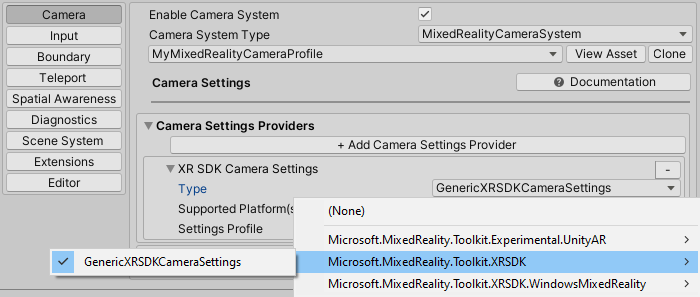

Getting started with MRTK and XR SDK
Caution
We've moved!
See this page on the new docs website. We've moved so we can provide you with a better docs experience. We will no longer be maintaing documentation on Github. Check out the new site to get started with MRTK in Unity!
XR SDK is Unity's new XR pipeline in Unity 2019.3 and beyond. In Unity 2019, it provides an alternative to the existing XR pipeline. In Unity 2020, it will become the only XR pipeline in Unity.
Prerequisites
To get started with the Mixed Reality Toolkit, follow the provided steps to add MRTK to a project.
Configuring Unity for the XR SDK pipeline
The XR SDK pipeline currently supports 3 platforms: Windows Mixed Reality, Oculus, and OpenXR. The sections below will cover the steps needed to configure XR SDK for each platform.
Windows Mixed Reality
- Go into Unity's Package Manager and install the Windows XR Plugin package, which adds support for Windows Mixed Reality on XR SDK. This will pull down a few dependency packages as well. Ensure that the following all successfully installed:
- XR Plugin Management
- Windows XR Plugin
- XR Legacy Input Helpers
- Go to Edit > Project Settings.
- Click on the XR Plug-in Management tab in the Project Settings window.
- Go to the Universal Windows Platform settings and ensure Windows Mixed Reality is checked under Plug-in Providers.
- Ensure that Initialize XR on Startup is checked.
- (Required for in-editor HoloLens Remoting, otherwise optional) Go to the Standalone settings and ensure Windows Mixed Reality is checked under Plug-in Providers. Also ensure that Initialize XR on Startup is checked.
- (Optional) Click on the Windows Mixed Reality tab under XR Plug-in Management and create a custom settings profile to change the defaults. If the list of settings are already there, no profile needs to be created.

Oculus
- Follow the How to configure Oculus Quest in MRTK using the XR SDK pipeline guide to the end. The guide outlines the steps needed to configure both Unity and MRTK to use the XR SDK pipeline for the Oculus Quest.
OpenXR (Preview)
Important
OpenXR in Unity is only supported on Unity 2020.2 and higher.
Currently, it also only supports x64 and ARM64 builds.
- Follow the Using the Mixed Reality OpenXR Plugin for Unity guide, including the steps for configuring XR Plugin Management and Optimization to install the OpenXR plug-in to your project. Ensure that the following have successfully installed:
- XR Plugin Management
- OpenXR Plugin
- Mixed Reality OpenXR Plugin
- Go to Edit > Project Settings.
- Click on the XR Plug-in Management tab in the Project Settings window.
- Ensure that Initialize XR on Startup is checked.
- (Optional) If targeting HoloLens 2, make sure you're on the UWP platform and select Microsoft HoloLens Feature Set

Note
If you have a pre-existing project that is using MRTK from UPM, make sure that the following line is in the link.xml file located in the MixedRealityToolkit.Generated folder.
<assembly fullname = "Microsoft.MixedReality.Toolkit.Providers.OpenXR" preserve="all"/>
Note
For the initial release of MRTK and OpenXR, only the HoloLens 2 articulated hands and Windows Mixed Reality motion controllers are natively supported. Support for additional hardware will be added in upcoming releases.
Configuring MRTK for the XR SDK pipeline
If using OpenXR, choose "DefaultOpenXRConfigurationProfile" as the active profile or clone it to make customizations.
If using other XR runtimes in the XR Plug-in Management configuration, like Windows Mixed Reality or Oculus, choose "DefaultXRSDKConfigurationProfile" as the active profile or clone it to make customizations.
These profiles are set up with the correct systems and providers, where needed.
To migrate an existing profile to XR SDK, the following services and data providers should be updated:
Camera
From WindowsMixedReality.WindowsMixedRealityCameraSettings

to
| OpenXR | Windows Mixed Reality |
|---|---|
GenericXRSDKCameraSettings |
XRSDK.WindowsMixedReality.WindowsMixedRealityCameraSettings and GenericXRSDKCameraSettings |

Input
From WindowsMixedReality.Input.WindowsMixedRealityDeviceManager

to
| OpenXR | Windows Mixed Reality |
|---|---|
OpenXRDeviceManager |
XRSDK.WindowsMixedReality.WindowsMixedRealityDeviceManager |
OpenXR:

Windows Mixed Reality:

Boundary
From MixedRealityBoundarySystem

to
| OpenXR | Windows Mixed Reality |
|---|---|
XRSDKBoundarySystem |
XRSDKBoundarySystem |

Spatial awareness
From WindowsMixedReality.SpatialAwareness.WindowsMixedRealitySpatialMeshObserver

to
| OpenXR | Windows Mixed Reality |
|---|---|
| In progress | XRSDK.WindowsMixedReality.WindowsMixedRealitySpatialMeshObserver |

Controller mappings
If using custom controller mapping profiles, open one of them and run the Mixed Reality Toolkit -> Utilities -> Update -> Controller Mapping Profiles menu item to ensure the new XR SDK controller types are defined.